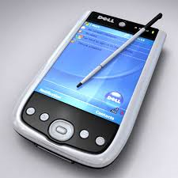

Mobile Computing-Devices
there are various gadgets available in the market that are built on a platform to support mobile computing.
They are usually classified as
- (PDA)
A handheld computer principally used for personal information managementThe main aim of this tool is to serve as a compact, easy to use, portable electronic organizer or day planner able to share information with your computer systems. PDA is an extension of the PC, not a substitute. These systems are capable of sharing information through a process or service known as synchronisation with a computer system. Both devices can contact each other to search on individual devices for changes or updates. The use of Bluetooth and Infrarot links enables these devices to always be synchronized. A user can browse the internet with PDA devices, listen to audio clips, watch video clips, edit and modify office documents and many more services . The device has a stylus and a touch sensitive screen for input and output purposes.

-
smartphones
Internet-enabled cell phone that can support mobile appsThis type of phone combines PDA features with mobile phone or camera phone features. It has top edge over other mobile phone types. Smartphones have the capability of running multiple programs simultaneously. These phones include high-resolution touch screens, web browsers that can access and display standard web pages instead of just mobile-optimized sites, and high-speed access to data via Wi-Fi and high-speed broadband cellulars .Modern smartphones employ the most common mobile operating systems (OS) including Google's Android, Apple's iOS, Nokia's Symbian, RIM's BlackBerry OS, Samsung's Bada, Microsoft's Windows Phone, and embedded Linux distributions like Maemo and MeeGo. Such operating systems can be installed on various phone models, and each device can typically receive multiple OS software updates over its lifetime.
-
Tablet PC and iPads
This mobile device is larger than a mobile phone or PDA and integrates into a touch screen and is operated using on-screen touch-sensitive motions. They often get controlled by a pen or a finger touch. They are usually slate-shaped and light in weight. For example, ipads, Galaxy Tabs, Blackberry Playbooks etc. They offer the same functionality as laptops. They are far superior in supporting mobile computing and have enormous processing power Users are able to edit and modify document files, access high-speed internet, stream video and audio data, receive and send emails, attend / give lectures and presentations among many other features. They have excellent resolution and clarity to the screen.
video show the MC Devices